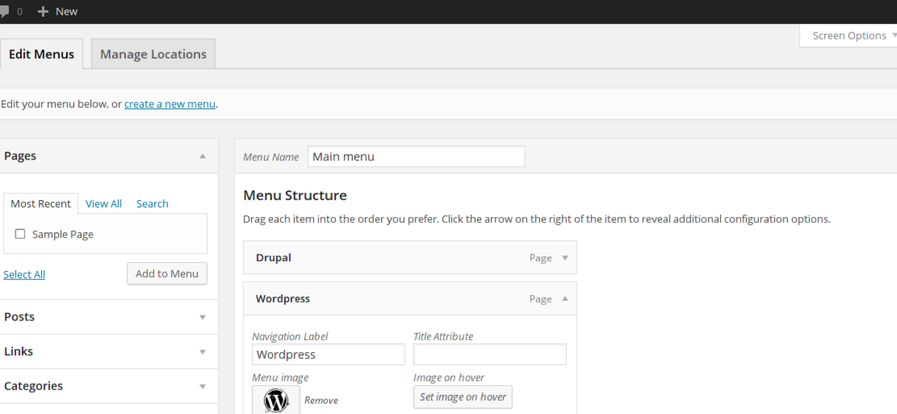
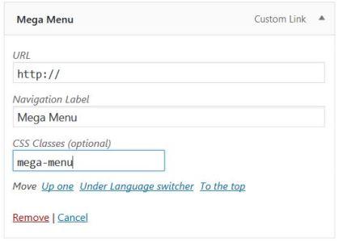

How to Customize a Very Long Drop Down Menu in Divi
How to customize the drop down menu in your Divi theme? This is a common question when you have a menu item that is too long (has many submenu items). You usually come to a point when the content can go below the fold of the screen. In these cases, you will not be able to see the remaining submenu items. Luckily to all of us who are using the Divi theme, there is a nice hidden feature, called “mega menu”. The Divi mega menu functionality allows you to style a really long dropdown menu in a beatiful multi-column layout. Here is what you should do to customize the drop down menu in your Divi website and do not worry that some of the submenu items may appear below the fold and will not be visible.
Customize the Drop Down Menu with the Divi Mega Menu Functionality
From the WP dashboard go to Appearance => Menus. From the top right corner you should click on “screen options” and then tick “CSS classes” box.

Now expand the menu item that you want to style. In this way, you will be able to see all the available configuration options and apply the css class “mega-menu” to the menu item:

In the above example, the main menu item is called “Mega Menu” but you can call it any way you want. The important thing here is to apply the correct css class.
After that, when you have applied the changes, go to the homepage and click on the menu item that we have just adjusted. You should be able to see a beautifully rendered 4-column layout grid with all the menu subitems. The Divi mega menu is a really fancy way to display a lot of sub menu items in a comprehensive multiple-column layout. In this way, we have effectively fixed the problem with long drop down menu items that cannot be properly displayed in the main menu.
Customize the Drop Down Menu with CSS
Finally, this is not required, but you can also do some further stylizations to personalize your website’s design. Here is an example CSS code that you can use to change the background color of the drop down menu, the hover effects and to change the color of the active sub menu item:
#top-menu .sub-menu {
background-color: #3c5464;
}
#top-menu .sub-menu li a {
font-size: 14px;
width: 100%;
color: rgb(255, 255, 255);
border-bottom: 1px solid #768792;
}
.sub-menu li:hover {
background-color: #25313a !important;
}
.nav li ul .current-menu-item a {
color: rgb(242, 182, 50) !important;
}
Feel free to play around with this code. Happy coding!
Read more: